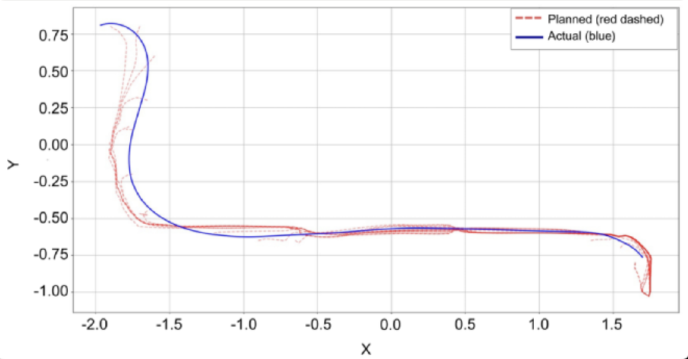
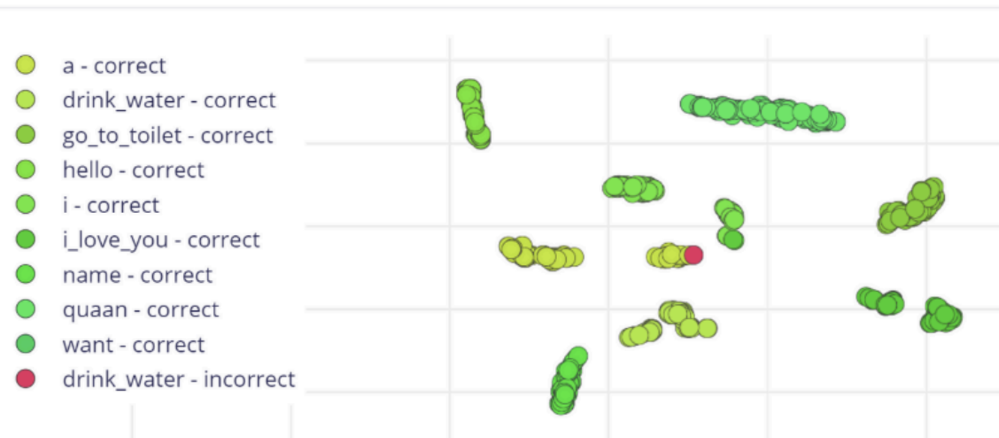
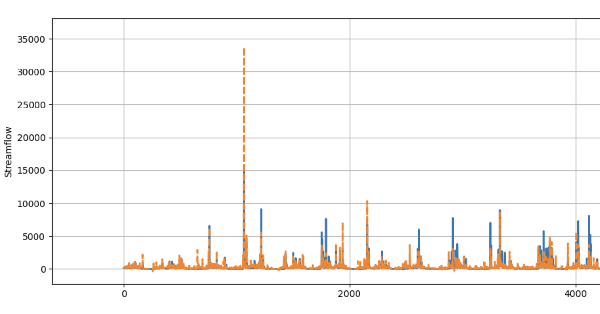

Trung Quan Cao
Bachelor of Science in Artificial Intelligence applicant for Fall - 2026
I am an ambitious candidate with award-winner at ISEF, ViSEF and national informatics contests. I passionate about mathematics, physics and artificial intelligence.
I am seeking an opportunity to advance my research and academic excellence.
Projects
-

Autonomous Wheelchair for Mobility and Communication Assistance for ALS Patients
Quan Cao, Hieu Le
4th Prize at the International Science and Engineering Fair, 2025
-

Translational Gloves for Enhancing Communication of Individuals with Speech and Hearing Impairments
Quan Cao
3rd Prize at the National Youth Informatics Contest, 2024
-

Applying Machine Learning to Flood Forecasting in Central Vietnam
Quan Cao, Khang Nguyen, Sinh Vo, Dang Trinh, Thu Nguyen, Thao Nguyen
Summer in Engineering and Applied Sciences, 2025